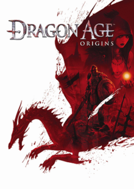

Dragon Age Origins |
||
|---|---|---|
|  | Sinopsis: El personaje del jugador —"El Guarda"— es un nuevo guarda gris reclutado en Ferelden y comienza su viaje para poner fin a la inevitable ruina eligiendo uno de los seis orígenes. Esta elección determinara quien era el guarda antes de los eventos del juego. Por consecuencia, afectara el modo en que los PNJs (personaje no jugador) traten al guarda. Los elfos, por ejemplo, son tratados como ciudadanos de segunda. Frente a la inesperada traición a manos de los que se suponía que eran los más grandes defensores de Ferelden, el guarda debe ahora utilizar los antiguos tratados de los guardas grises para reunir aliados improbables y construir un ejército para enfrentarse al Archidemonio , un antiguo Dios que se manifiesta en forma de un poderoso y terrible dragón, ahora contaminado por los engendros tenebrosos y liberado de su prisión bajo la superficie surge para liberar la quinta ruina en la turbulenta historia de Thedas. |
Desarrollador:BioWares Plataformas: PlayStation 3, PC y Xbox 360 Año: 2009 Duracion:30 horas aprox Pais:Canada |
Criticas Profesionales:DayoDragon Age : Origins es una obra maestra que no debes perderte y que es el mejor en lo que hace en casi todo. Te lo podrás encontrar por debajo de los 20 Euros en las tiendas y te recomiendo que lo compres nuevo ya que la diferencia de precios en muy poca y porque los desarrolladores se merecen que inviertas dinero en su producto. |
Trailer |
Obtener:AlquilarComprar |
Registrate/Iniciar Sesion